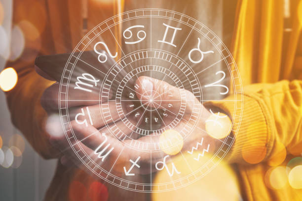

A Private Reading To {firstName}
From The Divine Astrology Reading
For The {starSign} Who Born on {month} {date}, {year}
Dear {firstName},
It is happening…
The cosmic energy, the moon and the sun are now aligning perfectly…
While you were taking this reading, you had summoned the power of the universe…
Which means, in just a few moments…
You will be able to unleash your true potential….
Because the stars are now in your very favor…
Once you get that, you will not only know what path to take, but also know exactly what you should do next in your life.
All without worry, doubt and fear…
Even if things seem uncertain right now…
You will be able to navigate through life’s challenges with the power of cosmic guidance.
So, congratulations!
You made the right choice for taking this reading!
As A {starSign}, Born In {month} {date}, {year}...
You have the favor of the universe.
While the cosmic energy is rising right now...
Your moon sign and your sun sign are giving you the cosmic energy to receive your dreams.
With the city you were born in, it holds you in a position where you can tap into your hidden energy.
Because {location} is a place that has a secret cosmic energy that most people don’t yet know…
It is the kind of energy that can get you where you want to be in your life if you know how to use it.
Now, See Your Astrology Chart Below
It’s fascinating to see how the planets are positioning in your favor.
They represent how your life is going to be…
- Your Moon is telling you to follow your intuitions, so you can receive what other planets want to give you.
- Your Sun is showing you that your life changing moment is coming.
- Your Mercury is reminding you to receive with gratitude.
- Your Venus is guiding you to the path that will lead you to a secure and happy relationship.
- Your Mars is keeping you from those bad luck and misfortunes.
- Your Jupiter is holding you in a position where you are able to receive everything in abundance.
- And your Saturn is giving you the prosperity of wealth, love, and health.
As they are giving you these messages…
They are also showing you that…
This is your destiny.
You see.
They have been in the universe for over thousands of years…
They have seen people live their life over and over again…
And the universe knows…
Everyone Has One Destiny
And by knowing your destiny, you will be able to get away from the life you don’t want…
It can be the one you have right now…
It can be the one you might have in the future…
And it can also be the one in your past…
But the problem is this…
We Can’t Get Away Our Misfortune Without Aligning Ourselves With The Energy…
…even though we’ve known the cosmic planets are now in your favor.
And if you remember…
What it takes to receive what you want is by harnessing those secret cosmic energy which you already have.
And that’s something that allows you to have the power of the cosmic planets, within just a snap of fingers.
When you have that power, you will be able to get to the place you want to be…
Your health…
Your career…
Your relationship…
It Will Get You Everything You Wish For
It is the key that can channel the cosmic energy into any forms of reality…
…the form of reality you may have long for.
Because the universe has always been trying to help us get everything we want.
And the reason we haven’t got what we want is not because we don’t deserve it…
But because we just can’t recognise it…
Or we can say it is just hidden from our plain sight…
Thousand years ago, people were able to use the cosmic energy to turn their dreams into reality.
But... why can't we now?
I assume you may know the answer.
And that’s what I am going to share with you in the following words.
In this short message, you will see how you can use what you already have, to manifest your desires…
Whether it’s your health…
Whether it’s your career…
Whether it’s your relationship…
You Can Have It All
And you will also see how close you are to the life of your dream that you may have been thinking…
Because from my personal experience…
We are often just "one step away"... to where we want to be.
…It is a step that is so easy and simple to take.
And most of us… just don’t know yet.
When you know what can help you take that simple step, and how to do it…
See how the entire world changes for you.
I didn’t believe it myself at first.
Because it was too good to be true for me.
And I was thinking…
"How can it be so simple and WHY don't we even know it after these thousands of years?"
Well, it turns out that only a few people know about this.
And they have been using it to have a healthy body, wonderful career and romantic relationship.
They are satisfied. They are happy. They are living a life without worries.
Now, if you want to know how to use this cosmic energy to get what you truly want…
…and even know exactly what you should do next…
Then keep on reading.
Because by the end of this message, you will get to the point where the cosmic energy is being with you.
And more, having the power to live your life without darkness…
…while knowing everything in the universe is going to be rooting for you.

This Is The Story of How I Went From Feeling Lost And Hopeless... To Receiving Everything I Wanted And Living My Best Life Ever
My name is Eileen Helion.
It has been 11 years ago…
I was in a situation where I felt lost in my life…
"I don’t know"... was the answer to most of my questions…
"I don’t know how I can make my body healthy without giving up the food I love the most…"
"I don’t know how I can have more security from my job…"
"I don’t know how I can make the man I adore pay attention to me and… will never pull away from me…"
I didn’t know, really…
While seeing my friends getting whatever they want in life, I did feel jealous and shamed…
…because I felt like I was failing at everything that mattered.
It Seemed Like They Had All Figured Out…
…and all I could do was sit on the sideline and watch.
I was desperate to get my health, career and romance on track…
…but I didn’t know where to start.
And there was a sound whispered to my ears…
"What if this is going to be my whole life?"
I cried when I thought of this.
Because this is not what I want in my life.
NO. I screamed it in my mind.
I shut the door and hide myself in my room…
…I felt lonely.
And I was alone at night for a long period of time.
But one night, while I tilted my head to watch the stars…
There was a sound talking to me in my head…
It was a sound that was so gentle and warm…
And I felt that I may have heard that before…
Because I can feel that in my body.
It said…
"What If You Could Rewrite The Story And Receive The Life You Truly Deserve?"
I was stunned.
I didn’t feel lonely for the very first time.
I felt warm and knew in my gut that…
The life I deserved was just nearby if I have guidance.
And that was the moment I started to do something different.
Something that allowed me to be in charge of my own life.
Because at that very moment, I knew it in my gut…
I can rewrite my story and receive what I truly deserved.
The very first thing I did was to look up the internet.
And The First Thing I Saw Was Astrology Reading
It got my attention.
Because the moment that changed my life was the moment I saw the stars.
I took the reading, and it gave me everything I needed.
Then it also gave me an audio to listen to.
It was an audio that was designed for {starSign}. (Yes, I am a {starSign} too!)
And it was an audio that can channel the power of astrology to any wish in your mind.
When I started to listen to this audio, I still felt doubtful.
Because at that time, it was the first ever frequency audio we can find in the entire world.
Unlike most of the frequency audio out there right now…
It is the only frequency audio that changes my whole life.
I didn’t feel significant change, but after that 67 days…
Things Started To Turn Into My Favour, And I Can Say… Everything
Because my health was suddenly getting better…
I can easily and quickly lose weight without giving up my favourite food.
And because of this, I started dating again!
Guys were paying attention to me and asking me out.
And best of all, I found the one.
The one who I truly admired.
He was so obsessed with me and committed to me that I never saw him pay attention to other women. (Never. I swear!)
And on the career side, I quickly got promoted and became the go-to person in our field.
I couldn’t believe that would happen, but it did!
Everyone There Was So Friendly To Me And Saw What I Was Really Worth
And now, I am married to the man I adored and going to have kids very soon.
My job is secure and I am so healthy that I feel light and happy all the time.
And I have to say, I still can’t believe the little action I took 11 years ago can have this huge change in my life.
Until now, I still listen to this frequency audio at night, I can always make my manifestation come true with it.
{firstName}, As You Are Here…
I know it cannot be a coincidence…
…but destiny.
A destiny that the universe guides us together and is showing you the path toward where you want to go in your mind.
Maybe you feel doubtful everything I just told you can be true…
…but I can feel you.
Because I was in the same place.
And I can tell you that, if this is the will of the universe…
Then this can be the right track for you.
The right track that can finally guide you to the place you want to be in.
The health, the career, the relationship.
The life you secretly want but haven’t told anyone.
Can you feel that?
Well, that feeling is your intuition and it is the keystone for your future.
But it cannot help you to receive the life you deserve along the way… if you don’t have the help of the universe.
Because without that…
Everything you do will have to take EXTRA effort.
Which means, if you can have the power of the universe…
You Can Receive The Life You Deserve "Effortlessly"
And that’s the reason why I am here talking to you, {firstName}.
I want to share the only and ultimate way that can allow you to receive the life you want with the power of astrology…
It only takes you one minute every night to listen.
Once you listen to it for the next two weeks, you will start feeling the world starts changing for you.
Whether it’s your health, career and your relationship…
You will feel more confident, fulfilling and connected with a better future.
And now, if you believe in astrology…
You deserve what you truly want.
Introducing…
The Ultimate Astrology Frequency
The Ultimate Astrology Frequency is the first and only one-minute frequency that can allow you to connect with your star sign, {starSign}, and receive what you deserve within just 67 days.
This is a frequency audio that most people don’t have yet…
Which means it can give you the most power and control before everything is too late.
The reason I can say this is because I am still using it every single night.
Also Casey, Alex, Jessie and many many others!
We are still secretly using it to receive the life we deserve.
And right now…
If you truly want to receive the life that you are imagining in your mind…
Then I can tell you that…
Everything Is Going To Change For You
Because the moment you decided to take on this reading…
The universe has felt you and heard your voice.
It heard your voice that you can have a better life.
And it is ready to grant your wish.
And now the question is this…
Are you ready for that?
Receive the life you truly want?
No more worry, doubt and fear?
Get anything you want… effortlessly?
And from my personal experience, I can tell you that…
You Can Rewrite Your Own Story If You Choose To
And within 67 days, everything can change for you.
And the only limitation is your imagination.
If you can think of it, you can have it.
Because the universe, the Lunar Moon, Venus, and all other planets are now rooting for you.
All you need to do now is listen to this one-minute Ultimate Astrology Frequency every night…
…with a specific instruction I will show you…
…then you can harness the power and receive it all, simply and easily.
And if you act right now to receive this gift from the universe…
You Can Have The Ultimate Astrology Frequency For Just $7 Today
Yes, you are right!
You can have the most powerful frequency without paying too much on your path to your best life.
And if you truly want it...
You need to take action right now, because...
…We Will Have To Take Down This Website At Any Time
Because we cannot ensure if there will be someone using this power for bad reasons...
So if you want to have this cosmic gift...
We urge you to get yours right now.
And you need to remember...
You cannot be here by coincidence, but destiny with options to choose your fate.
And time is always of the essence, {firstName}.
In the next 67 days, you can see your life remains the same...
...Ignore everything I just shared with you...
...And have to face the misfortunes by yourself, alone.
Or, you can manifest and get everything you want.
Your dream health, your dream career, and your dream relationship.
You can choose.
Yours Truly,
Eileen Helion
P.S. Thank you so much for your time reading my message, and I can’t wait to hear the good news from you!
P.P.S. Have you been back to {city} recently? I was born there too, and the cosmic energy there is now blossoming. You should feel lucky knowing it!